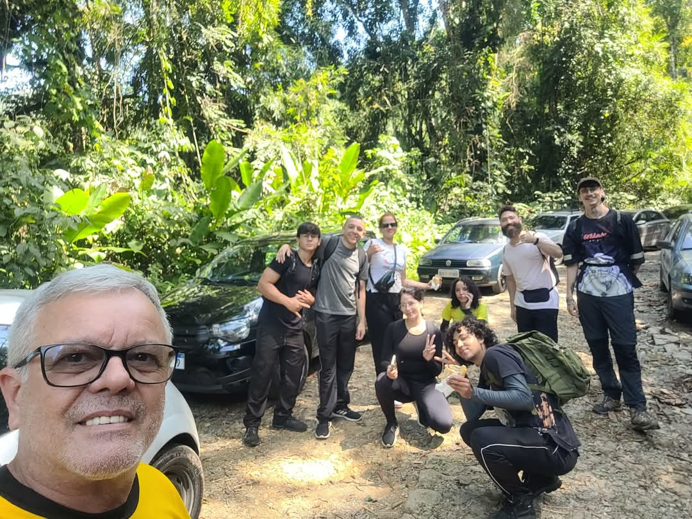
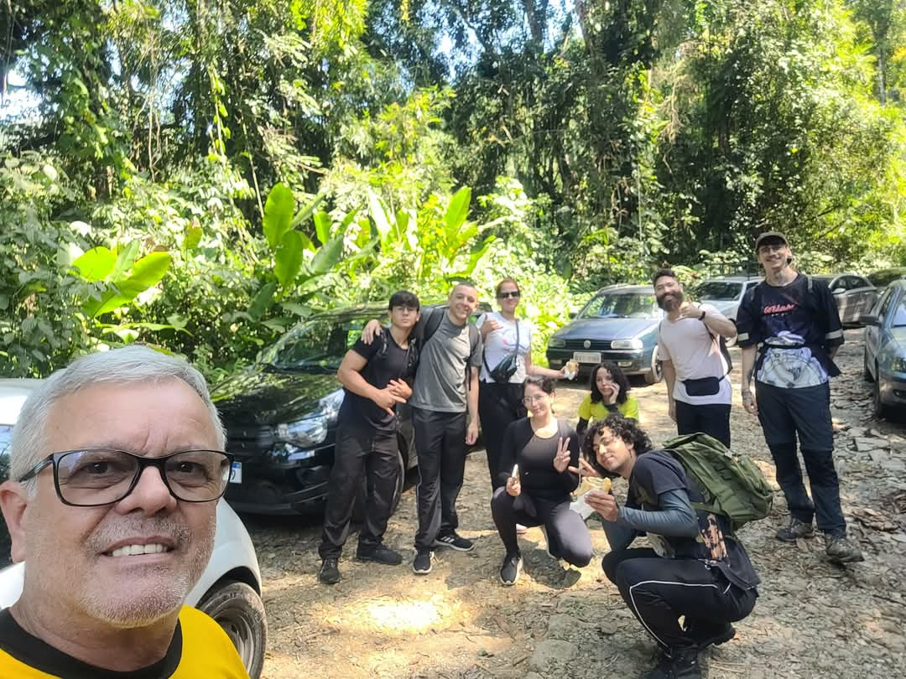

Olá, sou Larissa Nicoli, natural de Itapeva-SP e atualmente residente em Campinas. Sou apaixonada por explorar o
mundo e conhecer a mim mesma. Para isso, prático atividades que me conectam com a natureza e com meu eu interior, como
trilhas,capoeira e croche.
Minha jornada acadêmica começou com uma Licenciatura em História, que cursei de 2019 a 2022. No entanto, em 2023,
descobri uma nova paixão: o desenvolvimento frontend. Através de cursos gratuitos e estudos intensivos, adquiri
conhecimentos básicos em HTML, CSS e JavaScript e comecei a criar pequenos projetos.
Agora, estou cursando Desenvolvimento de Sistemas, com o objetivo de aprimorar minhas habilidades em web e expandir
meus conhecimentos em frontend e backend. Estou ansiosa para explorar novos caminhos e desbloquear minhas potencialidades.
 
